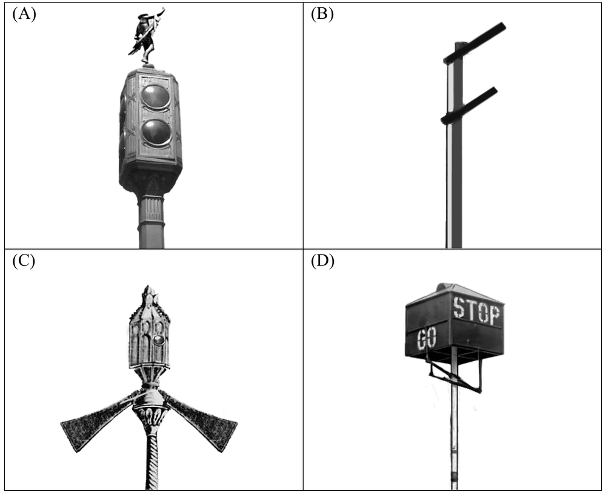

先讀文章、作答下方的題目，再展開後面的「看答案、依據句與逐段中譯」和「這一篇的生字表」。也可以到互動練習線上作答，交卷後自動批改。
第 1 段While waiting to cross the street at busy intersections, have you ever wondered who invented the traffic light? Most people credit the first traffic light to Nottingham engineer John Peake Knight. A railway manager, Knight specialized in designing the signaling system for Britain’s growing railway network in the 1860s. He saw no reason why this could not be adapted for use on the busy London intersections. Thus, he proposed a signaling system based on the railway movable-arm signal: Arms extending horizontally commanded drivers to stop, whereas arms lowered to a 45-degree angle told drivers to move on, resembling a traffic director’s gestures. Red and green gas lamps were added to the signal for use at night. A police officer was stationed by the side to operate the system.
第 2 段Knight’s traffic signal was installed near London’s Westminster Bridge in December 1868, but the system was short-lived. A gas leak one month later caused an explosion in the lights, injuring the policeman operating it. Deemed a public hazard, the project was immediately dropped, and traffic lights were banned until their return in 1929 back to the British streets.
第 3 段In the early 1900s, versions of the British traffic lights appeared in big cities in America, where traffic was on a sharp rise. Systems using movable arms were popular in Chicago, while those using the red and green lights were adopted in San Francisco. Patents with innovations on Knight’s ideas were filed nationwide. A major breakthrough was the yellow light invented by a Detroit police officer William Potts. Installed in Detroit in 1920, Potts’ three-color system allowed for the added signal “proceed with caution” to be displayed.
第 4 段Now, with the emergence of self-driving cars, researchers have begun to suggest that traffic signals are no longer necessary. Intersections will operate in a way that cars automatically adjust their speed to cross through, while maintaining safe distances from other vehicles. In the near future, we may experience a brand new form of traffic management!
35.What is this passage mainly about?
36.Which of the following pictures shows Knight’s proposed traffic signal?

37.Which of the following statements is true, according to the passage?
38.Here is a sentence: “This design was adopted in later traffic light designs across the world.” Which paragraph is most suitable to have it as the final sentence?
| 題號 | 官方答案 | 答對率 | 鑑別度 |
|---|---|---|---|
| 35 | (A) | 47% | 72 |
| 36 | (C) | 52% | 45 |
| 37 | (D) | 56% | 72 |
| 38 | (C) | 75% | 43 |
答對率與鑑別度出處：大考中心 114 學年度學科能力測驗統計圖表：英文科答對率及鑑別度表
依據句：全文要讀完整篇才能判斷，不在某一句裡。
第 1 段Thus, he proposed a signaling system based on the railway movable-arm signal: Arms extending horizontally commanded drivers to stop, whereas arms lowered to a 45-degree angle told drivers to move on, resembling a traffic director’s gestures.
第 1 段Red and green gas lamps were added to the signal for use at night.
第 4 段Now, with the emergence of self-driving cars, researchers have begun to suggest that traffic signals are no longer necessary.
第 4 段Intersections will operate in a way that cars automatically adjust their speed to cross through, while maintaining safe distances from other vehicles.
第 3 段Installed in Detroit in 1920, Potts’ three-color system allowed for the added signal “proceed with caution” to be displayed.
第 1 段在繁忙的十字路口等著過馬路時，你有沒有想過紅綠燈是誰發明的？大多數人認為第一座紅綠燈出自諾丁漢的工程師 John Peake Knight。Knight 是一位鐵路經理，1860 年代英國的鐵路網不斷擴張，他專門設計鐵路的號誌系統。他認為這套系統一樣可以改用在倫敦繁忙的路口，於是以鐵路的可動臂號誌為基礎，提出一套號誌系統：號誌臂水平伸出，表示駕駛人要停下來；號誌臂下降到 45 度角，表示可以通行，就像指揮交通的人在打手勢。號誌上另外加裝紅、綠兩色的煤氣燈，供夜間使用，旁邊還派駐一名警察負責操作。
第 2 段Knight 的交通號誌在 1868 年 12 月裝設在倫敦西敏橋附近，但這套系統沒用多久。一個月後，煤氣外洩引起燈具爆炸，操作號誌的警察因此受傷。當局認定這套號誌危害公共安全，計畫隨即喊停，紅綠燈也從此禁止使用，直到 1929 年才重回英國街頭。
第 3 段1900 年代初期，美國大城市的交通量急遽增加，各地陸續出現仿照英國紅綠燈的號誌。芝加哥流行用可動臂的系統，舊金山則採用紅綠燈的系統。全美各地都有人以 Knight 的構想為基礎，申請改良的專利。其中一大突破是底特律警察 William Potts 發明的黃燈。Potts 的三色系統 1920 年裝設在底特律，多了一個「小心通行」的號誌。
第 4 段如今隨著自駕車出現，研究人員開始提出交通號誌已經沒有必要的看法。未來的路口會這樣運作：車輛自動調整速度通過路口，同時和其他車輛保持安全距離。在不久的將來，我們或許就會體驗到全新的交通管理方式！
第 1 段Most people credit the first traffic light to Nottingham engineer John Peake Knight.
第 2 段Knight’s traffic signal was installed near London’s Westminster Bridge in December 1868, but the system was short-lived.
第 3 段In the early 1900s, versions of the British traffic lights appeared in big cities in America, where traffic was on a sharp rise.
第 4 段Now, with the emergence of self-driving cars, researchers have begun to suggest that traffic signals are no longer necessary.